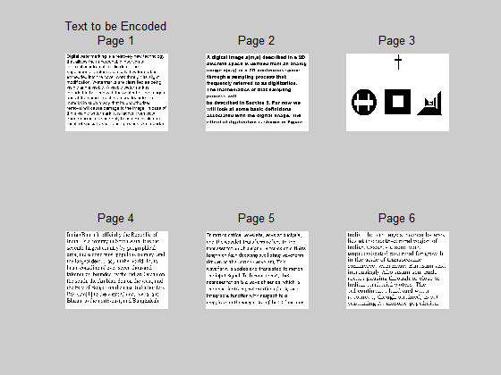
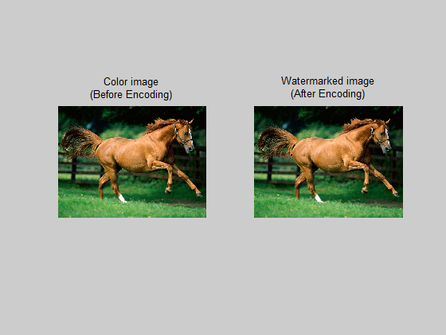
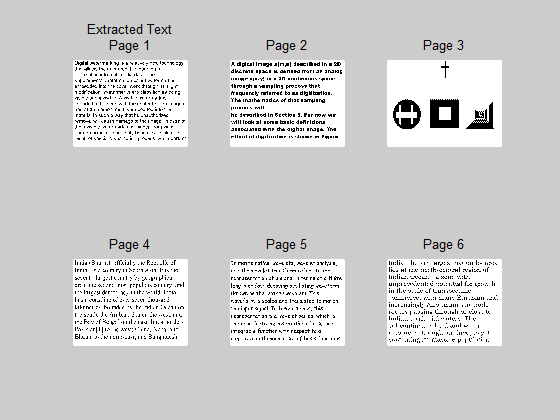

HIDING MULTIPLE TEXT PAGES INTO A COLOR IMAGE
Contents
About me
- A. Cherma Rajan ,(2003-2007 Batch),
- B.E.,Electronics and Communication Engineering,
- Madurai-625 001,
- India.
- E-mail: chermarajan [at] yahoo [dot] co [dot] in
About this Program
This program has the ability to embed/hide multiple text images in any color image. The encoded text images can be seamlessly recoverable. The key advantage in this coding algorithm is, the embedded text image does not create any visible marks on the color image. Thus the text data cannot be identified by naked eyes. This ensures secure way of transferring confidential data through widely available Color image as a data carrier. This method can be utilized in web pages, e-mail and media.
Tips to use my program
- For better results use 24-bit lossless image format (ex. bmp, tif) as the Text image
- Use larger resolution Images (> 512 x 512)
- Avoid usage of small size fonts
- All Images (both Color and Text) must be same in resolution
- Text data should be converted to bitmap image (bmp) before execution
- Text data should be monochrome(Black letters) ,color text leads to undesire results
- Store processed image output in any lossless format (ex. bmp, tif)
- Modify the location of the images used in this program as per your Local drive
Part One: Get the Inputs
This part read the input images (1 Color image + 6 Text images) from the local drive. Change the path of the image mentioned in imread() function as per your input location.
clc; close all; clear all; tic; % Image input im_in = imread('F:\Cherma\Animal.jpg');% Color image size_temp = size(im_in); % Text inputs im_tx = imread('F:\Cherma\1.bmp'); % Text page 1 if( ~isequal(size_temp, size(im_tx)) ) error('All Input Images must be equal in size'); end size_temp = size(im_tx); im_in_tx1(:,:,1) = im_tx(:,:,1); im_tx = imread('F:\Cherma\2.bmp'); % Text page 2 if( ~isequal(size_temp, size(im_tx)) ) error('All Input Images must be equal in size'); end size_temp = size(im_tx); im_in_tx2(:,:,1) = im_tx(:,:,1); im_tx = imread('F:\Cherma\3.bmp'); % Text page 3 if( ~isequal(size_temp, size(im_tx)) ) error('All Input Images must be equal in size'); end size_temp = size(im_tx); im_in_tx1(:,:,2) = im_tx(:,:,1); im_tx = imread('F:\Cherma\4.bmp'); % Text page 4 if( ~isequal(size_temp, size(im_tx)) ) error('All Input Images must be equal in size'); end size_temp = size(im_tx); im_in_tx2(:,:,2) = im_tx(:,:,1); im_tx = imread('F:\Cherma\5.bmp'); % Text page 5 if( ~isequal(size_temp, size(im_tx)) ) error('All Input Images must be equal in size'); end size_temp = size(im_tx); im_in_tx1(:,:,3) = im_tx(:,:,1); im_tx = imread('F:\Cherma\6.bmp'); % Text page 6 if( ~isequal(size_temp, size(im_tx)) ) error('All Input Images must be equal in size'); end size_temp = size(im_tx); im_in_tx2(:,:,3) = im_tx(:,:,1); clear im_tx; figure(1); % Show inputs subplot(2,3,1);imshow(im_in_tx1(:,:,1));title({'Text to be Encoded';'Page 1'}); subplot(2,3,2);imshow(im_in_tx2(:,:,1));title('Page 2'); subplot(2,3,3);imshow(im_in_tx1(:,:,2));title('Page 3'); subplot(2,3,4);imshow(im_in_tx2(:,:,2));title('Page 4'); subplot(2,3,5);imshow(im_in_tx1(:,:,3));title('Page 5'); subplot(2,3,6);imshow(im_in_tx2(:,:,3));title('Page 6');

Part Two: Image Encoding
In this part, Text images are encoded with a Color image. At first, an image plane is formed by interleaving pixels from two different Text images. Suppose a pixel of location (m,n) is taken from Text image 1, the next pixel location (m,n+1) is taken from Text image 2. This operation is performed by alterim() funtion. The same method is applied on rest of the Text images(2,3,4,5 and 6) and the image planes are formed.
The next step is to watermark the interleaved text image planes into Color image. In this step, the Text image data bits are coded as the LSB of Color image. LSB is chosen to hide text information as LSB of an image is least significant. Altering the bit does not affect the visual quality of th Image. Information of the Text image is grouped to two segments. Pixels less than 128 are grouped as 'segment 0' and pixels more than or equal to 128 are grouped as 'segment 1'. If a Text image pixel is grouped as 'segment 0' then the colocated pixel LSB bit in Color image is set as 'bit 0' and vice versa. The same operation is repeated for all other Text images generated before and coded as a LSB bit of each plane of the Color image.
- Text images 1 and 2 coded as LSB of Red plane in Color image
- Text images 3 and 4 coded as LSB of Green plane in Color image
- Text images 5 and 6 coded as LSB of Blue plane in Color image
NOTE: In bmp 24 bit format, each color pixels are represented by 8-bits. LSB of each color plane is considered for this encoding. Change the path of output image mentioned in imwrite() function as per your local drive.
% Arrange Text images in interleaved manner two per Color plane im_in_tx1 = altertxt(im_in_tx1,im_in_tx2); % Hide Text images in Color image im_wm = hidetxt(im_in,im_in_tx1); figure(2);subplot(1,2,1); imshow(im_in); title({'Color image';'(Before Encoding)'}); figure(2);subplot(1,2,2); imshow(im_wm); title({'Watermarked image';'(After Encoding)'}); clear im_in im_in_tx1 im_in_tx2; % Write watermarked image after Encode imwrite(im_wm,'F:\Cherma\wm.bmp');

Part Three: Recovery of Text image
This part performs the reverse operation of encoding. At first, the Text images are extracted from the LSB bit of the Color image which obtained from the previous process. The extracted Text image is combination of two Text images arranged in interleaved manner. Three image planes are obtained from this function txtxtract() The next step is to deinterleave these Text planes and to form the two Text images seperately. This operation is performed by the function imxtract(). This operation is repeated for rest of the Text planes to get the final Text images.
NOTE: Change the path of image specified in imread() as per your local drive.
% Read watermarked image to Decode im_wm = imread('F:\Cherma\wm.bmp'); % Extract Text images from each Color plane im_xtr = extracttxt(im_wm); % Separate pair of Text images from each plane of extracted Text image [im_out_tx1 im_out_tx2] = separatetxt(im_xtr); clear im_wm im_xtr;
Part Four: Edge Tappering
This part is the final step of this program. The images obtained from the previous step is not tappered. Edge tappering is required as half of the Text image pixels are interpolated from the adjacent pixels. All the decoded text images are smoothen by fspecial() function available in MATLAB.
PSF = fspecial('laplacian');
im_out_tx1(:,:,1) = medfilt2(edgetaper(im_out_tx1(:,:,1),PSF));
im_out_tx2(:,:,1) = medfilt2(edgetaper(im_out_tx2(:,:,1),PSF));
im_out_tx1(:,:,2) = medfilt2(edgetaper(im_out_tx1(:,:,2),PSF));
im_out_tx2(:,:,2) = medfilt2(edgetaper(im_out_tx2(:,:,2),PSF));
im_out_tx1(:,:,3) = medfilt2(edgetaper(im_out_tx1(:,:,3),PSF));
im_out_tx2(:,:,3) = medfilt2(edgetaper(im_out_tx2(:,:,3),PSF));
toc;
Elapsed time is 2.237473 seconds.
Part Five: Store the Outputs
This part stores the output text images to the local drive.
NOTE: Change the path of the image mentioned in imwrite() function as per your output location.
figure(3);
subplot(2,3,1);imshow(im_out_tx1(:,:,1));title({'Extracted Text';'Page 1'});
subplot(2,3,2);imshow(im_out_tx2(:,:,1));title('Page 2');
subplot(2,3,3);imshow(im_out_tx1(:,:,2));title('Page 3');
subplot(2,3,4);imshow(im_out_tx2(:,:,2));title('Page 4');
subplot(2,3,5);imshow(im_out_tx1(:,:,3));title('Page 5');
subplot(2,3,6);imshow(im_out_tx2(:,:,3));title('Page 6');
imwrite(im_out_tx1(:,:,1),'F:\Cherma\1_recov.bmp');
imwrite(im_out_tx2(:,:,1),'F:\Cherma\2_recov.bmp');
imwrite(im_out_tx1(:,:,2),'F:\Cherma\3_recov.bmp');
imwrite(im_out_tx2(:,:,2),'F:\Cherma\4_recov.bmp');
imwrite(im_out_tx1(:,:,3),'F:\Cherma\5_recov.bmp');
imwrite(im_out_tx2(:,:,3),'F:\Cherma\6_recov.bmp');
